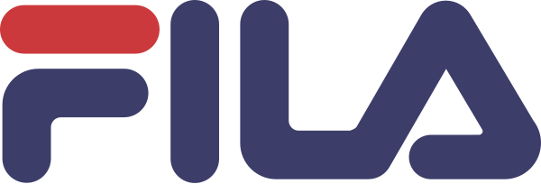

Stoğu tek havuzda yöneten, siparişi en uygun depo ya da mağazaya yönlendiren ve kapıya kadar izleyen omnichannel sipariş ve teslimat omurgası.
Beş ürün aynı sipariş ve stok verisi üzerinde çalışır; aralarında nokta-noktaya entegrasyon yazılmaz.

Perakende, moda, spor ve hızlı servis markaları sipariş, stok ve teslimat operasyonlarını CommerceLab üzerinde yürütüyor.
Kurumsal envanter, emniyet stoku, sipariş kaynaklama ve sipariş otomasyonu.
Konsoldaki operasyon raporları dönem seçilerek çalıştırılır, mail ile düzenli gönderilir.
İlk kaynaklama denemesinde stok bulunamayan sipariş satırı oranı.
Satır bazında iptal oranı, iptal süreleri ve sebepleri.
İade oranı, en çok iade edilen ürünler ve iade sebepleri.
SKU ve opsiyon bazında adet ve net ciro.
Sipariş, fatura, kargo ve teslim süreleri; hedefe uyum, kargo kırılımı.
Depo ve mağaza toplama iptalleri, sebep ve kullanıcı kırılımı.
Mağaza toplayıcılarının hız ve faturalama performansı.
Kargoya iletme, etiket alma ve iptal bildirimi; bizde ve kargoda geçen süre.
Canlı demoKonsol › Altyapı raporları
| Kanal | Medyan | p90 | Ortalama* |
|---|---|---|---|
| Web | 1 sn | 1,7 sn | 1,2 sn |
| Trendyol | 29 sn | 92 sn | 58 sn |
| Hepsiburada | 32 sn | 76 sn | 93 sn |
Ölçüm: kanaldaki sipariş tarihi → OMS kaydı, son 30 gün, canlı bir perakende müşterisi. Pazaryeri süresi kanalın sipariş yayınlama döngüsünü içerir. *24 saati aşan tekil gecikmeler hariç.
| Kanal | Stok değişimi / gün | Medyan | p90 |
|---|---|---|---|
| Web | 45.248 | 40 sn | 97 sn |
| Trendyol | 39.620 | 41 sn | 100 sn |
| Hepsiburada | 38.068 | 42 sn | 103 sn |
| N11 | 38.554 | 49 sn | 148 sn |
| Amazon | 13.221 | 46 sn | 115 sn |
Ölçüm: stok değişiminin envantere girişi → aynı SKU'nun ilgili kanala gönderimi, son 24 saat, canlı bir perakende müşterisi.
Emniyet stoku kanala gönderilen miktardan düşülür; kural altı boyutun her birleşiminde tanımlanabilir.
Canlı demoKonsol › OMS › Sourcing ayar sihirbazı
Hangi kanal hangi kaynaklardan beslenir, paketleme noktası ve kargo maliyetleri konsoldan tanımlanır.
Varsayılan ve alternatif senaryo, 100'e kadar sonuç; olasılık, paket ve kalem düzeyinde maliyet karşılaştırması.
Gerektiğinde sourcing yeniden tetiklenir ya da operasyon ekibi lokasyonu elle seçer.
Canlı demoWeb siparişi · paketlerTrendyol siparişi · paketler
Mağazayı bir karşılama noktasına ve satış kanalına dönüştüren uygulama.
Telefonla toplama, üç adımlı kalite kontrolü, mağaza fişi ve kargo etiketi aynı akışta.
Web'den verilen sipariş mağazada hazırlanır, müşteriye kodla teslim edilir.
Mağazaya sevk ve mağazalar arası transfer, irsaliyeli koli kabulüyle izlenir.
Fiş açılır, paketler okutulur, kargoya teslim fotoğraf ve video kaydıyla raporlanır.
Online verilen tıkla-al siparişinin iadesi mağazada alınır ve OMS'e işlenir.
Toplu ve kurumsal siparişler aynı toplama, paketleme ve sevk akışını kullanır.
Tüm satış kanallarıyla tek noktadan entegrasyon ve sürekli tutarlılık kontrolü.
Canlı demoKonsol › ComHub
Kaynak sistem (OMS, PIM) ile her satış kanalı sürekli karşılaştırılır; fark şiddetine göre önceliklenir ve düzeltilir.
Kanalda kilitli, kara listede ya da reddedilmiş ürünler.
Stokta yokken satışta, stokta varken kapalı ya da fazla stok gösteren ürünler.
Pazaryerinde olup OMS'te olmayan, OMS'te iptal olup kanalda açık kalan, uzun bekleyen siparişler.
Kaynaktaki fiyat ile kanalda yayındaki fiyatın karşılaştırması.
Canlı demoKonsol › ComHub › Control Tower
Checkout'tan mutabakata kadar tüm kargo süreçleri tek platformda.
Canlı demoTMS › KargolarTMS › Servis tipleri
Kargo firmasından bağımsız tek etiket; kendi tasarımınız, PDF, ZPL ve PNG çıktı, çevrimdışı yazdırma, e-fatura entegrasyonu.
Gerçek zamanlı durum takibi; açık gönderi raporu Excel'e alınarak kargo firmasıyla mutabakatta kullanılır.
Müşteri iadesi, tedarikçiye iade ve pazaryeri iadeleri aynı kurallarla; iade kargosu ve kodu otomatik.
Satıcı ve operatör modeliyle kendi pazaryerinizi işletin.
Canlı demoKonsol › Pazaryeri › Satıcılar
e-bebek'in web, uygulama, mağaza ve pazaryeri siparişlerini tek stok havuzundan karşılayacağı omurga için hazırız.